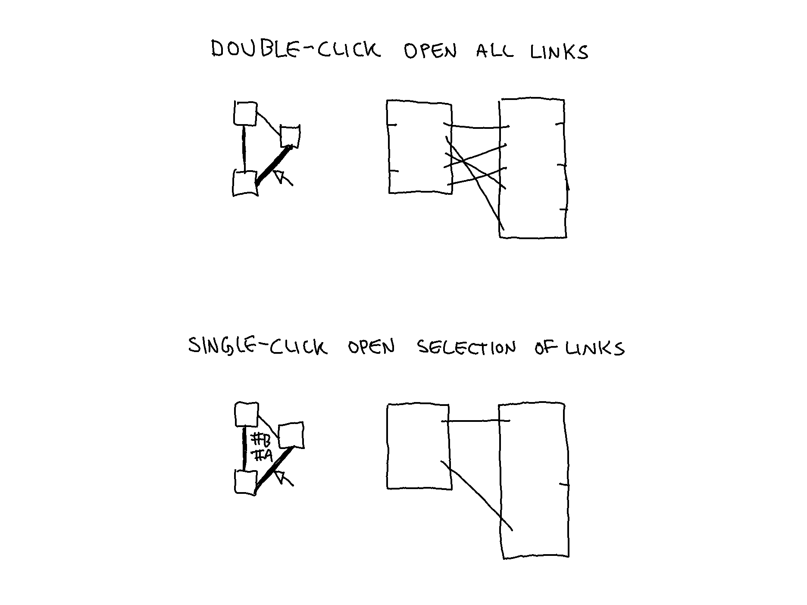
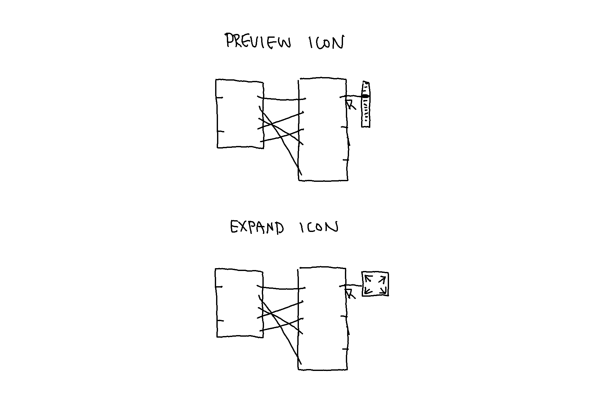

Prototyping: Sorting and Selecting Links to Open Documents
Summary of alterations:
- The representation of linked documents in version 1 and 2 demonstrated in the previous entry are discarded.
- The continuation of representing documents as nodes in Lateral Mode is potentially distracting and not particularly useful for opening and closing documents. Rather, the representation of documents are now distinguished in each mode.
- Linked documents are no longer represented as nodes in Vertical and Lateral Mode, rather as icons.
- Transition animations are divided into steps, showing how link properties change from Inventory to Lateral Mode.
Selecting Links
As seen in the previous entry, selecting a node in Inventory View opens a single document. It is also possible to open documents by selecting their links. There are two ways of opening documents by selecting links:
- Double-click on links between two nodes opens the two linked documents, and all links are visible between documents.
- Single-click on links between two nodes reveals a menu of the tag links. Selecting a tag link will open the two linked documents and only the selected tagged links are visible.

Icons for Representing Linked Documents in Lateral Mode
Hovering on a link in an open document reveals the linked document. There are two versions for how to represent a linked document: as an expand icon or preview icon.

Video Demonstration
The video below shows how to sort links by selecting #Labels, and selecting links to open documents.